John Barton
Software Engineer | Palm Bay, FL | johnrbarton27@gmail.com
Skills/Knowledge
Python | Flask Java
k8s
SQL
Bash
Ansible
Git
Linux
Agile Methodologies
OOP
Unit Testing
Atlassian
Java
k8s
SQL
Bash
Ansible
Git
Linux
Agile Methodologies
OOP
Unit Testing
Atlassian
Relevant Experience
Senior Software Engineer at Zoro Tools, Inc.
March 2022 - Present
Developed Python back-end microservices for cart/checkout operations for an e-commerce platform that totals over $1 billion in annual sales & 15,000+ daily orders.
Performed ERP transition from Oracle NetSuite to Commercetools, migrating hundreds of thousands of user accounts & related data.
Built Python-based automations for routine Customer Service tasks, metrics collection, and local development/testing, saving countless hours of manual setup and effort.
Principal Software Engineer at Northrop Grumman Corporation
July 2016 - March 2022
Technical lead for the E-2 DevOps team in support of multiple applications across different networks. Provided rapid solutions and support for teams and projects of all sizes. Wrote full-stack Python, Java, and web (HTML/CSS) applications to provide automations, configuration control, and user interfaces. Trained users on Git, Atlassian, and more.
Designed & implemented a Python library for accessing the REST APIs of various development tools (Jira, Bitbucket, Collaborator, Bamboo, SonarQube, etc.). Wrote dedicated customized scripts to provide key automations for a software department of 140+ engineers, greatly improving developer efficiency. Added unit tests & automated regression tests to this library.
Designed & developed full-stack Python Flask applications with integrations to PostgreSQL and SQLite for metrics display & collecting automated testing results.
Worked to implement a toolset involving the Atlassian stack (Jira, Bitbucket, and Bamboo) to improve program efficiency and tools usability, replacing the aging IBM tools (ClearCase/ClearQuest) and greatly improving the morale of developers and other tools users. Led a transition effort to move the entire E-2 program (~600 employees) from IBM to Atlassian.
Education
University of Florida - Gainesville, FL
Bachelor of Science in Computer Software Engineering, Minor in Leadership
Graduation Date: May 1, 2016 | GPA: 3.20